航空工业四川泛华
车间生产管理系统用户手册
一、分厂工艺用户
产品型号表是用于工艺员对产品基本信息进行维护的模块。
用户登录
操作：
1) 【新建】：创建一个新的产品。点击“新建”按钮，填写产品型号、产品名称、产品编码等信息，点击保存完成产品的创建。
2) 【删除】删除产品。选中需要删除的产品，点击删除按钮进行删除。
3) 【查询面板】查询产品型号表。点击查询面板，在弹出的页面输入框中输入各种相关的信息如：
产品型号、产品名称、产品编码、技术状态、产品级别等对产品型号表进行查询。
4) 【导入模板】：导入产品的模板。点击导入模板，下载一个excel文件，在该文件中填写产品的信息就可完成批量导入产品型号表。
5) 【批量导入】： 根据导入模板进行多条产品记录的导入。点击批量导入按钮，选择填写好的导入文件，点击确认即可完成批量导入。
6) 【导出】：导出产品型号表。点击导出按钮，导出一个包含所有产品型号表的excel文件。不能选择性导出。
解释一下以下字段：
- ：技术状态/图样版次/阶段；
- 其中值有四种：C，S，D，P，F；
- ：由科研管理部进行维护的，科研管理部在系统管理的枚举项中可对计量单位进行修改和添加，一般分为台、个、件；
- ：值可以一样，都可以作为唯一性，或者产品型号与技术状态 用作唯一性，他俩组合在一起就不能相同，产品型号可以相同，但是技术状态一定不能相同;
- ：现在系统中，产品级别是一级的。针对民品，产品级别是只分一级的。
- 对于军品，产品级别分很多级，比如，军方为一级，主机为二级，辅机为三级，
- 由科研管理部维护，同计量单位一样，分为一级、二级、三级
- ：同计量单位一样，一般分为海军、空军、陆航、火箭军、川西军检、外贸、民航
- ：主要用于产品投入
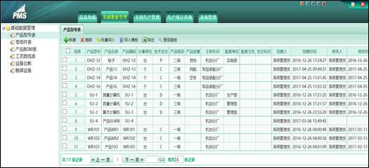
图1 新建与删除
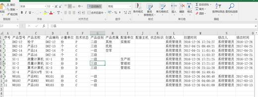
图2 导出的产品清单excel
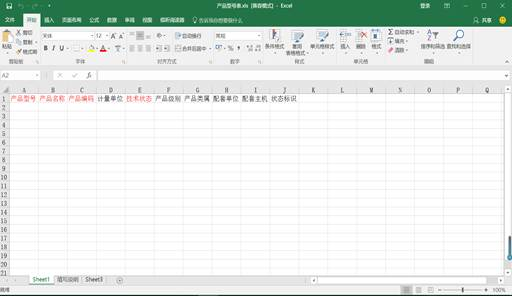
图3 导入模板
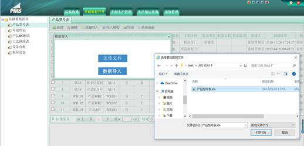
图4 批量导入
零组件表是用于工艺员对零组件基本信息进行维护的模块。
用户登录
操作：
1) 【新建】： 创建一个新的零组件。点击“新建”按钮，填写零组件代号、零组件名称、零组件编码等信息，点击保存完成零组件的创建。
2) 【删除】： 删除零组件。选中需要删除的零组件，点击删除按钮进行删除。
3) 【导入模板】：导入多条零组件记录的模板。点击导入模板，下载一个excel文件，在该文件中填写零组件表的信息就可完成批量导入零组件表。
4) 【批量导入】：根据导入模板进行多条零组件记录的导入。点击批量导入按钮，选择填写好的导入文件，点击确认即可完成批量导入。
目前系统只支持导入模板大于等于二行的数据模板。
5) 【导出】：导出零组件表。点击导出按钮，下载一个包含所有零组件表的excel文件。不能选择性导出。
6) 【查询面板】：查询零组件。点击查询面板，在弹出的页面输入框中输入各种相关的信息如：零组件型号、零组件名称、零组件编码、技术状态等对通知进行查询。
解释以下字段
- 1. 零组件类别：可以分为零件和组件；
- 2. 生产方式：自制、外购、外协;
- 3. 加工方式：普卡、壳体，普卡用于批量生产，壳体用于单件生产;
- 4. 配套类别：用于在BOM表的配套，有两种，专用件、标准件，在BOM表中，专用件又分为专有件和借用件;
- 5. 入库类别：可以入中央库、入在制品库、入其他库，还有入库提示，比如入其他库，入库提示是14k;
- 6. 生产单元：作为扩展性开发，因为中航工业现在在推广这个，所以保留，不需要填写;
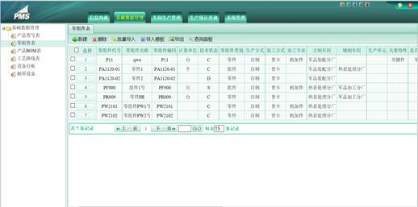
图5 零组件表界面
产品BOM表是用于工艺员对产品BOM进行维护的模块。
用户登录
操作：
1) 【物料配套表】：创建一个新的物料配套。点击产品型号表中的选择列中的数字。在产品结构树中点击相应的产品型号，填写物料配套信息。
2) 【物料配套】：确定配套物料。在物料配套表中的物料代号框中选择好配套物料。
3) 【删除】：删除配套物料。点击删除按钮即可删除已有的配套物料。
4) 【新建同级配套】：新建与所在配套物料同级的物料。点击新建按钮即可开始新建配套物料。
5) 【新建子级配套】：新建所在配套物料子级的物料。点击新建按钮即可开始新建配套物料。子级配套是当前物料配套与子级的配套。
6) 【查询】：查询产品型号表。点击查询按钮在输入框内输入产品型号和产品名称即可查询。
7) 【生成全部产品分工明细表】：生成全部产品分工明细表。点击生成按钮即可生成全部产品分工明细表。主要用于生产投入，零组件投入。
说明以下字段：
- 1. 配套类型：专用件的零件或者组件（统称物料）在与其他产品与组件(统称父物料)进行配套时，可以选择专有件和借用件，一个物料只能是一个父物料的专有件，
可以是多个父物料的借用件。第二种情况，当一个物料是一个产品的借用件时，物料下的子物料跟产品的关系也是借用件的关系。
- 2. 生成全部产品分工明细表：这个表主要是用于生成投入。在对产品与零组件进行配套之后，有一个状态标识表示明细表是否生成，
红色表示配套表改变了，黑色表示没有改变。
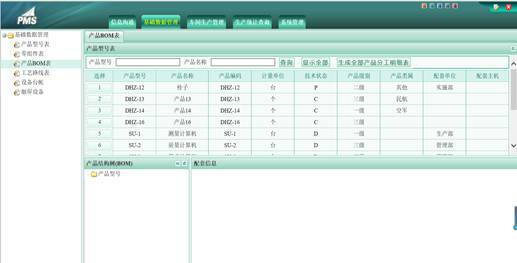
图6 产品BOM表界面
工艺路线表是用于工艺员对工艺路线进行维护的模块。
用户登录
操作：
1) 【新建】：创建一条新的工艺路线数据。点击工艺路线表中的新建按钮，填写物料代号、物料名称、物料编码、技术状态、工艺路线版本号等相关信息，点击保存按钮完成新建。
2) 【删除】：删除工艺路线表。选择工序路线后点击删除按钮即可删除已有的工艺路线。
3) 【生效】：将工艺路线发布生效。选择工艺路线后点击生效按钮即可使工艺路线生效，才可让工时员编辑工时。
4) 【置编辑】：将生效的工艺路线置为可编辑状态。选择工艺路线后点击置编辑按钮即可将生效的工艺路线置为可编辑状态。
5) 【冻结】：将工艺路线失效。选择工艺路线后点击冻结按钮即可将工艺路线失效，同时不可编辑。点击生效或置编辑还可以将失效的工艺路线重新转换为可编辑状态。
6) 【导出】：导出工艺路线表。点击导出按钮，下载一个包含所有工艺路线表的excel文件。
7) 【查询面板】：查询工艺路线表。点击查询面板，在弹出的页面输入框中输入各种相关的信息如：零组件代号、零组件名称、工艺路线版本号、工艺路线状态等对通知进行查询。
8) 【工序详情】：新建和查看工序具体情况。当工艺路线处于编辑状态时，点击工序详情按钮，在弹出的页面输入框中输入工序的基本信息。当工艺路线处于编辑状态时，点击工序详情按钮，在弹出的页面输入框中查看工序的相关情况。
工序信息包含工序类别，有加工工序和检验工序之分，若选择检验工序，则该工序在完工后不需要做工序检验记录，直接跳过。
9) 【工序检验项】：可以在产品的工序详细中对工序填写工序检验项，这里操作可以批量导入相应的工序检验项，导入时，必须在已有的工艺路线与工序号的前提下导入。用于产品检验。
说明以下字段：
- 1. 类别：工艺路线按照产品、组件与零件进行分类依次排列。
- 2. 工艺路线是生产投入的必须条件，工序详细是保证车间派工的依据。
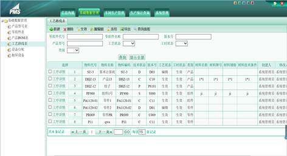
图7 工艺路线界面
业务通知是新建信息通知和查看发布通知的模块。
用户登录
操作：
1) 【新建】：创建一个新的业务通知。点击“新建”按钮，填写通知标题、通知内容、部门范围、角色范围等信息，点击保存完成业务通知的创建。当要发布时点击发布按钮完成业务通知的发布。
2) 【删除】：删除通知。选中需要删除的通知，点击删除按钮进行删除。
3) 【查询面板】：查询业务通知。点击查询面板，在弹出的页面输入框中输入各种相关的信息如：通知标题、通知内容、发布人、发布时间、发布状态等
对通知进行查询。
图8 新建业务通知
图9 查询面板界面
我的通知是查看发布给自己通知的模块。
用户登录
操作：
1)【查询】：查询业务通知。点击查询面板，在页面输入框中输入各种相关的信息如：通知标题、通知内容、发布人、发布时间等信息，点击查询按钮对通知进行查询。
2)【显示全部】：显示全部我的通知。点击显示全部按钮，显示全部我的通知。
图10 查询界面
定额工时登记是工艺员对定额工时、准备工时进行登记的管理模块。
用户登录
操作：
1) 【查询面板】：查询定额工时。页面输入框中输入：零组件代号、零组件名称等对定额工时进行查询。
2) 【工时登记】：选定零组件点击工时登记能够编辑和查看定额工时、准备工时。
对工时进行登记时，相应的工艺路线状态会变成生效。
3) 【生效】：登记完工时之后，对该工艺路线的工时进行生效操作，生效之后该工艺路线可以进行生产投入。
对生效的工时还可以进行置编辑操作。
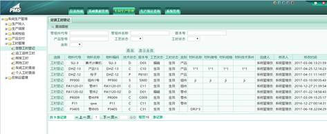
图11 定额工时查询界面
图12 工时登记界面
二、原材料保管员用户
业务通知是新建信息通知和查看发布通知的模块。
用户登录
操作：
1) 【新建】： 创建一个新的业务通知。点击“新建”按钮，填写通知标题、通知内容、部门范围、角色范围等信息，
点击保存完成业务通知的创建。当要发布时点击发布按钮完成业务通知的发布。
2) 【删除】： 删除通知。选中需要删除的通知，点击删除按钮进行删除。
3) 【查询面板】：查询业务通知。点击查询面板，在弹出的页面输入框中输入各种相关的信息如：通知标题、通知内容、
发布人、发布时间、发布状态等对通知进行查询。
图13 新建业务通知
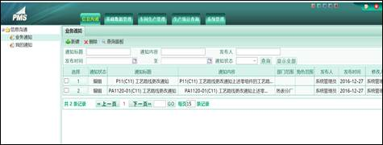
图14 查询面板界面
我的通知是查看发布给自己通知的模块。
用户登录
操作：
1) 【查询】： 查询业务通知。点击查询面板，在页面输入框中输入各种相关的信息如：通知标题、通知内容、
发布人、发布时间等信息，点击查询按钮对通知进行查询。
2) 【显示全部】： 显示全部我的通知。点击显示全部按钮，显示全部我的通知。
图15 查询界面
零组件缺件计划是对零组件缺件情况进行查询、导出、导入的模块。
用户登录
操作：
1) 【批量导入】：根据导入模板，进行零组件缺件计划的导入，可以得到生产过程中零组件的缺件的名称和库存数量，
以及每月缺件计划的数量；
2) 【查询】：点击“查询”按钮，就可以将零组件缺件计划按照年度、月份、零组件代号和加工单位条件查询出来；
3) 【导出】：点击“导出”按钮，就可以导出零组件缺件计划所有的记录。
图16 批量导入零组件缺件计划界面
零件投入是物资供应部人员根据计划对零件进行投入，并分派材料到车间，由车间分厂的保管员确定领料，
通过车间计划进行投入现场的模块。
用户登录
操作：
1) 【新建】： 创建一个新的施工卡(记录卡)片。点击“新建”按钮，填写产品型号、零组件代号、选择工艺路线版本号、总批次、
投入数量、日期等信息，点击保存完成施工卡(记录卡)片的创建。
- a).条件：只有在产品BOM维护中点击全部生成产品分工明细表，才可以选择到该产品下的零组件。
- b).填写的方式有两种，一种可以先选择产品，再选择零组件代号；另一种可以先选择零组件代号，再选择产品型号。其中零组件与产品的关系只能是专有件。
工艺路线版本号。在先选择零件时，只有零件存在于BOM表中，且产品分工明细表不需要重新生成。在选择零件时，必须是类别为零件，生产方式为自制，
加工方式为普卡的零件表记录。
2) 【删除】： 删除施工卡(记录卡)片。选中需要删除的施工卡(记录卡)片，点击删除按钮进行删除。
3)【导出】：导出施工卡(记录卡)片。点击导出按钮，下载一个包含所有施工卡(记录卡)片的excel文件。
4)【查询面板】：查询施工卡(记录卡)片。点击查询面板，在弹出的页面输入框中输入各种相关的信息如：施工卡(记录卡)号、当前状态等对其进行查询。
5)【打印工序流动卡】： 点击施工卡(记录卡)片，进入施工卡(记录卡)片界面，点击打印工序流动卡。
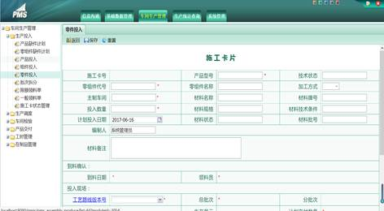
图17 新建零件投入界面
图18 打印工序流动卡界面
图19 查询面板界面
组件投入是对组件投入进行管理的功能。
用户登录
操作：
1) 【新建】： 创建一个新的施工卡(记录卡)片。点击“新建”按钮，可以先填写产品型号，再填写零组件代号，或者先填写零组件代号，再填写产品型号，然后选择工艺路线版本号、总批次、投入数量、日期等信息，点击保存完成施工卡(记录卡)片的创建。只有在产品BOM维护中点击全部生成产品分工明细表，才可以选择到该产品下的零组件。
2) 【删除】： 删除施工卡(记录卡)片。选中需要删除的施工卡(记录卡)片，点击删除按钮进行删除。只能删除备料状态的施工卡(记录卡)片。
3) 【导出】：导出施工卡(记录卡)片。点击导出按钮，下载一个包含所有施工卡(记录卡)片的excel文件。
4) 【查询面板】：查询施工卡(记录卡)片。点击查询面板，在弹出的页面输入框中输入各种相关的信息如：施工卡(记录卡)号、当前状态等对其进行查询。
5) 【零件清单】：点击施工卡(记录卡)片，进入施工卡(记录卡)片界面，点击零件清单，在弹出的界面中查看组件的零件清单。选择进入零件清单后，可以对零件清单的记录进行编辑和添加。
6) 【打印工序流动卡】： 点击施工卡(记录卡)片，进入施工卡(记录卡)片界面，点击打印工序流动卡。
7) 【打印零件清单】：点击施工卡(记录卡)片，进入施工卡(记录卡)片界面，点击零件清单，在弹出的界面中，再点击打印清单，即可打印该组件下的零件清单。
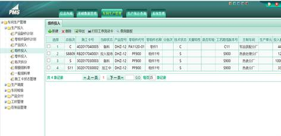
图20 组件投入界面
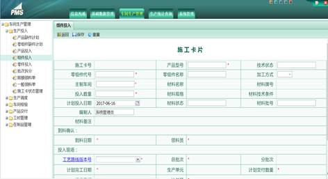
图21 新建组件投入界面
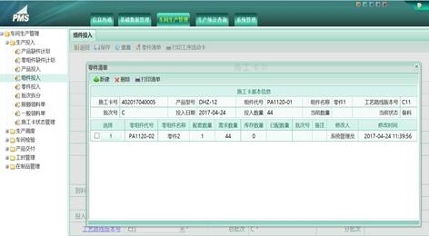
图22 零件清单界面
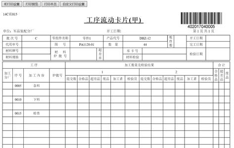
图23 打印工序流动卡界面
图24 查询面板界面
图25 打印零件清单界面
三、分厂保管用户
业务通知是新建信息通知和查看发布通知的模块。
用户登录
操作：
1) 【新建】：创建一个新的业务通知。点击“新建”按钮，填写通知标题、通知内容、部门范围、角色范围等信息，
点击保存完成业务通知的创建。当要发布时点击发布按钮完成业务通知的发布。
2) 【删除】：删除通知。选中需要删除的通知，点击删除按钮进行删除。
3) 【查询面板】：查询业务通知。点击查询面板，在弹出的页面输入框中输入各种相关的信息如：通知标题、通知内容、
发布人、发布时间、发布状态等对通知进行查询。
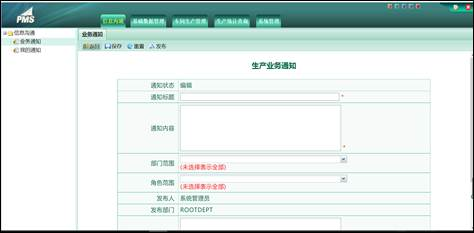
图26 新建业务通知
图27 查询面板界面
我的通知是查看发布给自己通知的模块。
用户登录
操作：
1) 【查询】：查询业务通知。点击查询面板，在页面输入框中输入各种相关的信息如：通知标题、通知内容、
发布人、发布时间等信息，点击查询按钮对通知进行查询。
2) 【显示全部】：显示全部我的通知。点击显示全部按钮，显示全部我的通知。
图28 查询界面
零组件缺件计划是对零组件缺件情况进行查询、导出、导入的模块。
用户登录
操作：
1) 【批量导入】：根据导入模板，进行零组件缺件计划的导入，可以得到生产过程中零组件的缺件的名称和库存数量，以及每月缺件计划的数量；
2) 【查询】：点击“查询”按钮，就可以将零组件缺件计划按照年度、月份、零组件代号和加工单位条件查询出来；
3) 【导出】：点击“导出”按钮，就可以导出零组件缺件计划所有的记录。
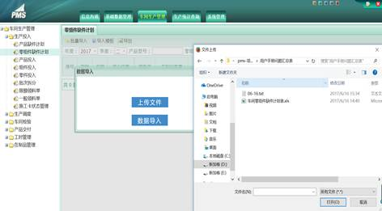
图29 批量导入零组件缺件计划界面
零件投入是物资供应部人员根据计划对零件进行投入，并分派材料到车间，由车间分厂的保管员确定领料，通过车间计划进行投入现场的模块。
用户登录
操作：
1. 【编辑】：编辑已有的施工卡(记录卡)片。点击“选择”下的数值按钮进入编辑页面，填写倒料日期，领料员信息，点击保存完成施工卡(记录卡)片的编辑。
2. 【删除】：删除施工卡(记录卡)片。选中需要删除的施工卡(记录卡)片，点击删除按钮进行删除。
3. 【导出】：导出施工卡(记录卡)片。点击导出按钮，下载一个包含所有施工卡(记录卡)片的excel文件。
4. 【查询面板】：查询施工卡(记录卡)片。点击查询面板，在弹出的页面输入框中输入各种相关的信息如：施工卡(记录卡)号、当前状态等对其进行查询。
5. 【打印工序流动卡】：点击施工卡(记录卡)片，进入施工卡(记录卡)片界面，点击打印工序流动卡。
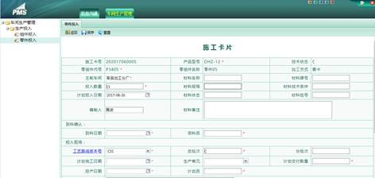
图30 编辑零件投入界面
图31 打印工序流动卡界面
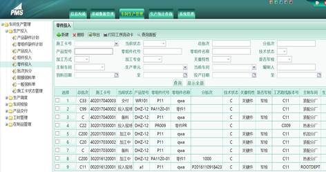
图32 查询面板界面
组件投入是对组件投入进行管理的功能。
用户登录
操作：
1) 【编辑】： 编辑已有的施工卡(记录卡)片。点击“选择”下的数值按钮进入编辑界面，填写倒料日期和领料员信息，点击保存完成施工卡(记录卡)片的编辑。
2) 【删除】： 删除施工卡(记录卡)片。选中需要删除的施工卡(记录卡)片，点击删除按钮进行删除。只能删除备料状态的施工卡(记录卡)片。
3) 【导出】：导出施工卡(记录卡)片。点击导出按钮，下载一个包含所有施工卡(记录卡)片的excel文件。
4) 【查询面板】：查询施工卡(记录卡)片。点击查询面板，在弹出的页面输入框中输入各种相关的信息如：施工卡(记录卡)号、当前状态等对其进行查询。
5) 【零件清单】：点击施工卡(记录卡)片，进入施工卡(记录卡)片界面，点击零件清单，在弹出的界面中查看组件的零件清单。选择进入零件清单后，可以对零件清单的记录进行编辑和添加。
6) 【打印工序流动卡】： 点击施工卡(记录卡)片，进入施工卡(记录卡)片界面，点击打印工序流动卡。
7) 【打印零件清单】：点击施工卡(记录卡)片，进入施工卡(记录卡)片界面，点击零件清单，在弹出的界面中，再点击打印清单，即可打印该组件下的零件清单。
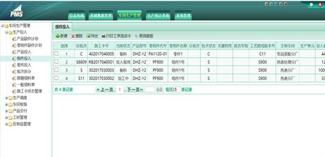
图33 组件投入界面
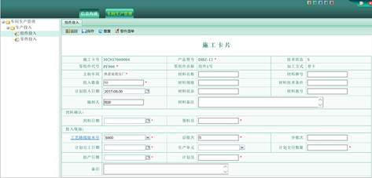
图34 编辑组件投入界面
图35 打印工序流动卡界面
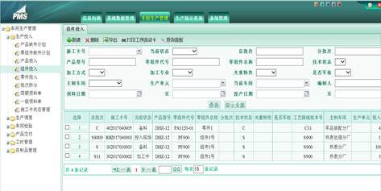
图36 查询面板界面
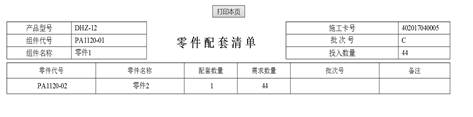
图37 打印零件清单界面
四、分厂计划员用户
业务通知是新建信息通知和查看发布通知的模块。
用户登录
操作：
1) 【新建】： 创建一个新的业务通知。点击“新建”按钮，填写通知标题、通知内容、部门范围、角色范围等信息，
点击保存完成业务通知的创建。当要发布时点击发布按钮完成业务通知的发布。
2) 【删除】： 删除通知。选中需要删除的通知，点击删除按钮进行删除。
3) 【查询面板】：查询业务通知。点击查询面板，在弹出的页面输入框中输入各种相关的信息如：通知标题、通知内容、
发布人、发布时间、发布状态等对通知进行查询。
图38 新建业务通知
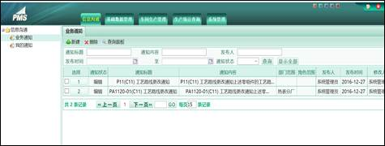
图39 查询面板界面
我的通知是查看发布给自己通知的模块。
用户登录
操作：
1) 【查询】： 查询业务通知。点击查询面板，在页面输入框中输入各种相关的信息如：通知标题、通知内容、
发布人、发布时间等信息，点击查询按钮对通知进行查询。
2) 【显示全部】： 显示全部我的通知。点击显示全部按钮，显示全部我的通知。
图40 查询界面
零组件缺件计划是对零组件缺件情况进行查询、导出、导入的模块。
用户登录
操作：
1) 【批量导入】：根据导入模板，进行零组件缺件计划的导入，可以得到生产过程中零组件的缺件的名称和库存数量，以及每月缺件计划的数量；
2) 【查询】：点击“查询”按钮，就可以将零组件缺件计划按照年度、月份、零组件代号和加工单位条件查询出来；
3) 【导出】：点击“导出”按钮，就可以导出零组件缺件计划所有的记录。
图41 批量导入零组件缺件计划界面
零件投入是物资供应部人员根据计划对零件进行投入，并分派材料到车间，
由车间分厂的保管员确定领料，通过车间计划进行投入现场的模块。
用户登录
操作：
1. 【编辑】： 编辑已有的施工卡(记录卡)片。点击“选择”下的数值按钮进入编辑页面，填写工艺路线版本号、批次号、
分批次号、计划完成日期、计划交付数量、投产日期、计划员等信息，点击保存完成施工卡(记录卡)片的编辑。
2. 【删除】： 删除施工卡(记录卡)片。选中需要删除的施工卡(记录卡)片，点击删除按钮进行删除。
3. 【导出】：导出施工卡(记录卡)片。点击导出按钮，下载一个包含所有施工卡(记录卡)片的excel文件。
4. 【查询面板】：查询施工卡(记录卡)片。点击查询面板，在弹出的页面输入框中输入各种相关的信息如：施工卡(记录卡)号、
当前状态等对其进行查询。
5.【打印工序流动卡】： 点击施工卡(记录卡)片，进入施工卡(记录卡)片界面，点击打印工序流动卡。
6. 【批次拆分】：点击施工卡(记录卡)片，进入施工卡(记录卡)片界面，对施工卡(记录卡)片进行批次拆分。点击批次拆分按钮，
在弹出的批次拆分界面中填写相关信息进行批次拆分。
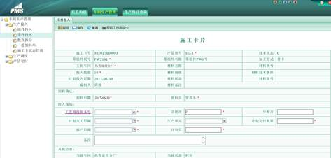
图42 编辑零件投入界面
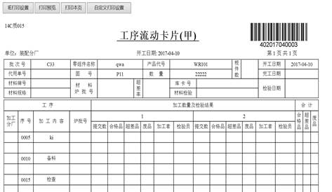
图43 打印工序流动卡界面
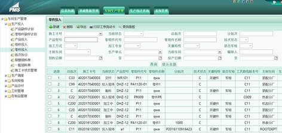
图44 查询面板界面
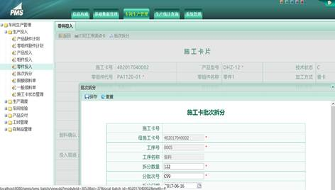
图45 批次拆分界面
组件投入是对组件投入进行管理的功能。
用户登录
操作：
1) 【编辑】： 编辑已有的施工卡(记录卡)片。点击“选择”下的数值按钮进入编辑界面，填写工艺版本号、
总批次号、分批次号、计划完成日期、计划交付数量、投入日期、计划员等信息，点击保存完成施工卡(记录卡)片的编辑。
2) 【删除】： 删除施工卡(记录卡)片。选中需要删除的施工卡(记录卡)片，点击删除按钮进行删除。
3) 【导出】：导出施工卡(记录卡)片。点击导出按钮，下载一个包含所有施工卡(记录卡)片的excel文件。
4) 【查询面板】：查询施工卡(记录卡)片。点击查询面板，在弹出的页面输入框中输入各种相关的信息如：施工卡(记录卡)号、
当前状态等对其进行查询。
5)【零件清单】：点击施工卡(记录卡)片，进入施工卡(记录卡)片界面，点击零件清单，在弹出的界面中查看组件的零件清单。选择进入零件清单后，
可以对零件清单的记录进行编辑和添加。
6)【打印工序流动卡】： 点击施工卡(记录卡)片，进入施工卡(记录卡)片界面，
7)【打印零件清单】：点击施工卡(记录卡)片，进入施工卡(记录卡)片界面，点击零件清单，在弹出的界面中，再点击打印清单，即可打印该组件下的零件清单。
8)【批次拆分】：点击施工卡(记录卡)片，进入施工卡(记录卡)片界面，对施工卡(记录卡)片进行批次拆分。点击批次拆分按钮，在弹出的批次拆分界面中填写相关信息进行批次拆分。
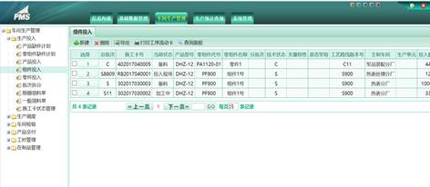
图46 组件投入界面
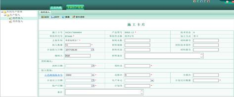
图47 编辑组件投入界面
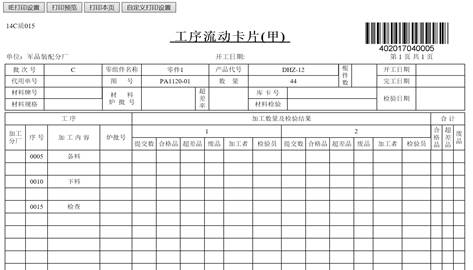
图48 打印工序流动卡界面
图49 查询面板界面
图50 打印零件清单界面
图51 批次拆分
批次拆分是用于分厂计划员对生产批次进行拆分管理的模块。
用户登录
操作：
1) 【新建】： 创建一个新的施工卡(记录卡)批次拆分。点击“新建”按钮，选择批次号、工序号、工序名称、拆分数量、分批次号、
日期等信息，点击保存完成施工卡(记录卡)批次拆分。
2) 【删除】： 删除施工卡(记录卡)批次拆分。选中需要删除项，点击删除按钮进行删除。
3) 【导出】：导出施工卡(记录卡)批次拆分。点击导出按钮，下载一个包含所有施工卡(记录卡)批次拆分的excel文件。
4) 【查询面板】： 查询批次拆分。点击查询面板，在弹出的页面输入框中输入各种相关的信息如：批次号、分批次号等对其进行查询。
5) 【打印】：点击施工卡(记录卡)批次拆分，进入施工卡(记录卡)批次拆分界面，对施工卡(记录卡)批次拆分进行打印。
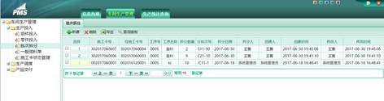
图52 批次拆分界面
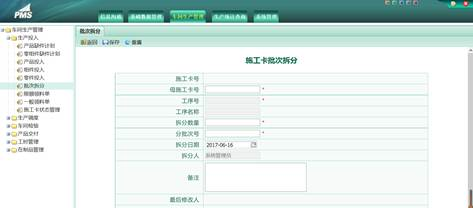
图53 新建批次拆分界面
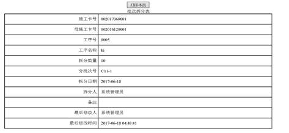
图54 打印批次拆分卡界面
施工卡(记录卡)状态管理是分厂计划员对施工卡(记录卡)状态进行管理的模块。
用户登录
操作：
1) 【查询】： 查询施工卡状态信息。页面输入框中输入：施工卡(记录卡)号、批次号等信息对施工卡(记录卡)状态进行查询。
2) 【导出】： 导出施工卡(记录卡)状态。点击导出按钮即可得到一个包含施工卡(记录卡)状态的Excel文件。
3) 【暂停生产】： 暂停施工卡(记录卡)。点击施工卡按钮，进入施工卡(记录卡)状态管理界面，点击暂停生产。
4) 【中止生产】： 中止施工卡(记录卡)。点击施工卡按钮，进入施工卡(记录卡)状态管理界面，点击中止生产。
5) 【恢复生产】： 对于暂停生产或者中止生产的施工卡(记录卡)，可以恢复生产。
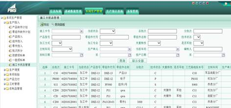
图55 查询界面
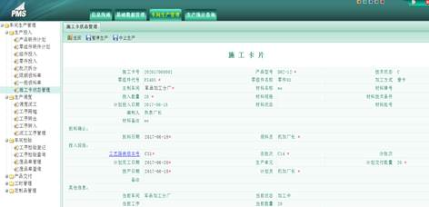
图56 施工卡(记录卡)状态管理界面
任意派工是车间计划或者调度员对派工进行管理的模块。
用户登录
操作：
1) 【查询】： 查询施工卡(记录卡)号。页面输入框中输入：施工卡(记录卡)号、当前状态等信息对任意派工进行查询。
能查询出投入现场与加工中的施工卡(记录卡)。
2) 【导出】：导出任意派工。点击导出按钮即可得到一个包含任意派工的Excel文件。
3) 【派工】：选择一个施工卡(记录卡)进行派工操作。在“施工卡(记录卡)信息”界面中进行中点击“派工”按钮，
在弹出的“生产派工”界面中进行派工操作。派工支持派工给多人，并且支持准备工时分给多人。对于工序类别是检验工序的，不用派工。在派工给工人时，
需要把工序准备指派给其中的人，如果没有，默认会工序准备指派给所选择的第一人。
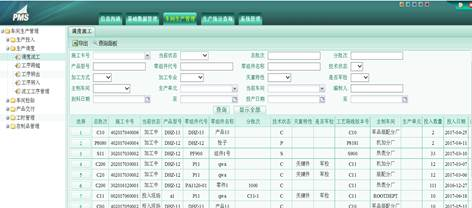
图57 查询界面
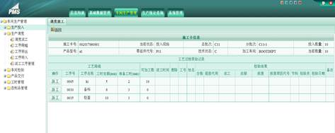
图58 施工卡(记录卡)工序派工界面
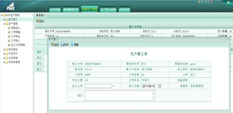
图59 生产派工界面
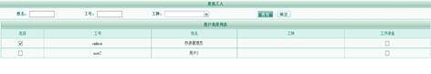
图60 派工界面
工序跨越是用于生产计划与调度员对工序进行跨越操作管理的模块。
工序跨越是需要工艺人员在系统中进行工艺路线的变更的，由调度在系统中进行新工艺路线同步。
用户登录
操作：
1) 【查询】：查询施工卡(记录卡)号。页面输入框中输入：日期、产品型号对施工卡(记录卡)号进行查询。可以查询出投入现场与加工中的施工卡(记录卡)。
2) 【导出】：导出可以进行工序跨越的施工卡(记录卡)。点击“导出”按钮即可得到一个包含可以进行工序跨越的施工卡(记录卡)信息的Excel文件。
3) 【跨越】：进行工序跨越。先勾选需要进行操作的工序，之后点击跨越按钮，在弹窗中进行选择是否进行跨越，跨越的工序不在进行检验。
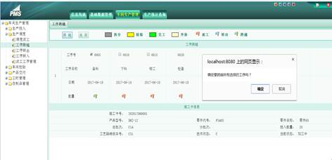
图61 工序跨越操作界面
工序跨越是用于生产计划与调度员对工序跨越进行操作管理的模块。
工序转出是用于计划员对工序需要外协至其他车间完成而进行的管理模块。
用户登录
操作：
1) 【查询】：查询施工卡(记录卡)号。页面输入框中输入：施工卡(记录卡)号、当前状态对工序转出进行查询。
2) 【导出】：导出可用于工序转出的施工卡(记录卡)。点击导出按钮即可得到一个包含工序转出的Excel文件。
3) 【转出】：进行工序转出。先勾选需要进行操作的工序和要转出的部门，之后点击转出按钮，在弹窗中进行选择是否进行转出。
对于转出到其他车间需要发布通知，通知其他车间进行加工处理。
对于转出到外协，不需要发布通知。
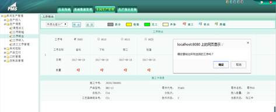
图62 工序转出界面
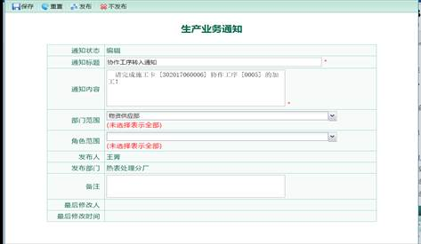
图63 转出到其他车间发布通知
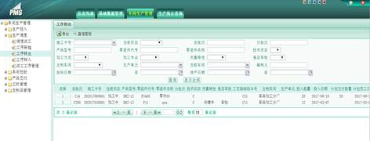
图64 查询界面
工序转入是用于分厂计划员对外协工序转入的管理模块。
用户登录，界面如下图所示：
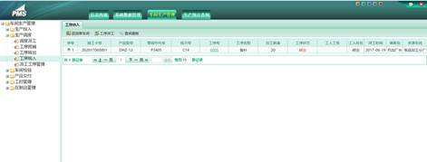
图65 工序转入界面
操作：
1) 【退回原车间】：将转入的工序退回原车间。选定要进行操作的工序，点击退回原车间按钮，
就可以将转入的工序退回原车间。这里只能选择一个工序进行退回原车间。退回原车间会发布通知到相应的车间。
2) 【工序派工】：对转入的工序进行派工。选定要进行派工操作的转入工序，点击工序派工，就可以进行工序派工。
3) 【查询面板】：查询转入的工序。在输入框内输入施工卡(记录卡)号、零组件代号就可以对转入的工序进行查询。
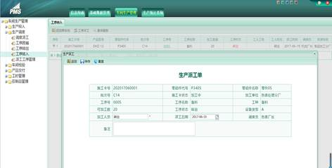
图66 工序派工界面
派工工序管理是计划员和工艺员对现场工艺进行调整的模块，并支持将现场工艺同步至主工艺路线。
用户登录，界面如下图所示：
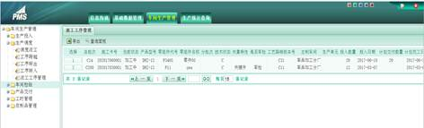
图67 派工工序管理界面
操作：
1) 【编辑】：选择一个施工卡(记录卡)号进入工艺路线界面，对工艺路线进行编辑，包括插入工序，删除工序，工序上移、
下移。已完工的工序不允许更改。对于拆分施工卡(记录卡)的工序背景显示为灰色。
2) 【同步工艺路线】：将主工艺路线同步至现场工艺，该工艺路线是由工艺员进行管理的。
主工艺路线是由工艺员进行维护的，现场工艺是车间现场进行管理的工艺路线。
3) 【查询面板】：查询转入的工序。在输入框内输入施工卡(记录卡)号、零组件代号就可以对转入的工序进行查询。
可以查询出投入现场与加工中的施工卡(记录卡)。
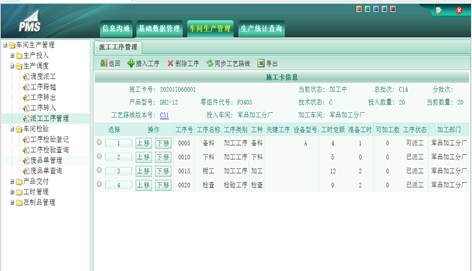
图68 派工工序编辑界面
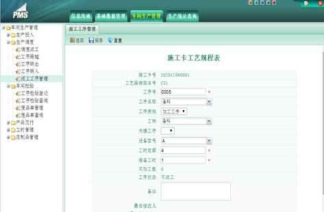
图69 在所选工序前插入工序界面
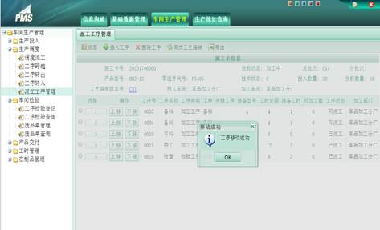
图70 工序移动界面
零组件交付登记是用于对零组件交付进行登记操作的模块。提供零组件交付登记功能，
显示可交付批次列表，提供零组件交付业务逻辑处理。
用户登录，界面如下图所示：
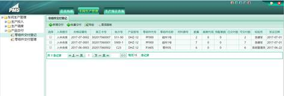
图71 零组件交付登记界面
操作：
1) 【查询面板】：查询零组件交付。页面输入框中输入：施工卡(记录卡)号、产品型号等对零组件交付记录进行查询。
2) 【导出】：导出零组件交付。点击导出按钮即可得到一个包含零组件交付的Excel文件。
3) 【新增交付】：新增交付。选择需要开合格证的施工卡(记录卡)，点击按钮进入新增交付界面，填写相关信息点击保存完成新增交付。
可进行部分交付。
4) 【批量交付】：可对多个开合格证的施工卡(记录卡)进行批量交付。
零组件交付管理提供对已交付信息的管理功能。
用户登录
，界面如下图所示：
图72 零组件交付管理界面
操作：
1) 【删除】：删除零组件交付单。选定要操作的零组件交付单，点击删除按钮，删除零组件交付单。
当某条施工卡(记录卡)的交付记录已经入库，此时不能删除，也就该条记录前没有多选框。当该施工卡(记录卡)没有入库或者部分入库，此时没有入库的或者部分没有入库的可以删除。
2) 【导出】：导出零组件交付单。点击导出按钮即可得到一个包含零组件交付单的Excel文件。
3) 【打印】：打印零组件交付单。
图73 零组件交付查询界面
图74 打印界面
五、工人用户
业务通知是新建信息通知和查看发布通知的模块。
用户登录
操作：
1) 【新建】： 创建一个新的业务通知。点击“新建”按钮，填写通知标题、通知内容、部门范围、角色范围等信息，
点击保存完成业务通知的创建。当要发布时点击发布按钮完成业务通知的发布。
2) 【删除】： 删除通知。选中需要删除的通知，点击删除按钮进行删除。
3) 【查询面板】：查询业务通知。点击查询面板，在弹出的页面输入框中输入各种相关的信息如：通知标题、通知内容、
发布人、发布时间、发布状态等对通知进行查询。
图75 新建业务通知
图76 查询面板界面
我的通知是查看发布给自己通知的模块。
用户登录
操作：
1) 【查询】： 查询业务通知。点击查询面板，在页面输入框中输入各种相关的信息如：通知标题、通知内容、
发布人、发布时间等信息，点击查询按钮对通知进行查询。
2) 【显示全部】： 显示全部我的通知。点击显示全部按钮，显示全部我的通知。
图77 查询界面
工序加工是车间工人填写加工数量的模块。
用户登录，界面如下：
图78 工人交检界面
操作：
1) 【编辑】：工人对车间的工序进行填写数据。
图79 工人填写交检界面
个人工时查询是用于对个人月工时进行查询操作的模块。
用户登录，界面如下图所示：
图80 个人工时查询
操作：
1) 【查询】：可以查询出个人哪年哪月的工时信息，只有检验员检验工人加工的工序并通过检验，
才可以把工序的准备工时或者加工工时算给工人。
六、分厂检验用户
业务通知是新建信息通知和查看发布通知的模块。
用户登录
操作：
1) 【新建】： 创建一个新的业务通知。点击“新建”按钮，填写通知标题、通知内容、部门范围、角色范围等信息，
点击保存完成业务通知的创建。当要发布时点击发布按钮完成业务通知的发布。
2) 【删除】： 删除通知。选中需要删除的通知，点击删除按钮进行删除。
3) 【查询面板】：查询业务通知。点击查询面板，在弹出的页面输入框中输入各种相关的信息如：通知标题、通知内容、
发布人、发布时间、发布状态等对通知进行查询。
图81 新建业务通知
图82 查询面板界面
我的通知是查看发布给自己通知的模块。
用户登录
操作：
1) 【查询】： 查询业务通知。点击查询面板，在页面输入框中输入各种相关的信息如：通知标题、通知内容、
发布人、发布时间等信息，点击查询按钮对通知进行查询。
2) 【显示全部】： 显示全部我的通知。点击显示全部按钮，显示全部我的通知。
图83 查询界面
工序检验登记是车间检验员用于对工序检验结果进行记录的模块。
用户登录，界面如下图所示：
图84 工序检验登记界面
操作：
1) 【查询】：查询工序检验登记。页面输入框中输入：施工卡(记录卡)号、产品型号等对工序检验登记的施工卡(记录卡)进行查询。
-
a) 当某道施工卡(记录卡)前出现太阳图标时，表示此道施工卡(记录卡)现在距离计划交付日期不到15天，
需要紧急处理；到出现月亮时，表示距离计划交付日期不到30天，需要依次处理。
2) 【导出】：导出工序检验登记的施工卡(记录卡)。点击“导出”按钮即可得到一个包含工序检验信息的施工卡(记录卡)的Excel文件。
3) 【检验】：对工序进行检验。点击施工卡(记录卡)进入工序检验登记界面，点击检验按钮，在出现的空格中填写相关检验的信息，
点击保存完成检验。若为他人返工返修，则需重新派工。
- a) 当是车间检验员进行检验时，必须是检验自己车间的工序，对于品质部下派的检验员可以对所有车间的工序进行检验。
- b) 后道工序的可加工数为前道工序的可用数量之和，前道工序的可用数量之和为检验合格数加上超差代用数量。
- c) 当某道工序的加工类型为正常加工的可用数量之和与这个工序的可加工数相等时，此时这道工序完成加工与检验，
在“可加工数”之前有对勾，来表示加工与检验完成。可以点击对勾，查询此道工序的派工记录与检验信息。
- d) 当某道工序的加工类型为正常加工的可用数量之和与这个工序的可加工数不相等时，此时用叹号来表示此道工序有问题，
可以点击叹号来查看此道工序的派工记录与检验信息。
- e) 检验出现废品数时，填写废品数，系统自动创建相关的废品记录，关于废品单的管理到模块废品单管理中处理。
图85 检验登记界面
图86 填写检验数据界面
图87 管理员删除检验记录界面
工序检验查询是用于对工序检验结果进行查询的模块。
用户登录，界面如下图所示：
图88 工序检验查询界面
操作：
1) 【查询】：查询工序检验结果。页面输入框中输入：施工卡(记录卡)号、产品型号等对工序检验结果进行查询。
2) 【导出】导出工序检验记录。点击“导出”按钮即可得到一个包含工序检验记录的Excel文件
废品单管理是对废品单进行管理操作的模块。包括开出废品单，废品工时记录废品单状态管理，提供废品单打印功能。
用户登录，界面如下图所示：
图89 废品单管理界面
操作：
1) 【查询】：查询废品单。页面输入框中输入：施工卡(记录卡)号、产品型号等对废品单进行查询。
2) 【导出】：导出废品单信息。点击导出按钮即可得到一个包含废品单的Excel文件。
3) 【开具废品单】：选择生成的废品单，点击开具废品单进行废品单填写界面。
4) 【打印】：打印废品处置单。
本系统不对废品单进行流程处理，只具有开具废品单的功能并打印出来。
图90 开具废品单1
图91 开具废品单2
废品单查询可用于查询已开废品单情况、数量、状态。
用户登录，界面如下图所示：
图92 废品单管理界面
操作：
1) 【查询】：查询废品单。页面输入框中输入：施工卡(记录卡)号、产品型号等对废品单进行查询。
2) 【导出】：导出废品单信息。点击导出按钮即可得到一个包含废品单的Excel文件。
3) 【打印】：打印废品处置单。
图93 废品处置单
图94 废品单打印
合格证登记是用于对合格证进行登记操作的模块。提供开合格证功能，显示可开合格证批次列表，提供开合格证业务逻辑处理。
自动生产合格证流水号。
用户登录，界面如下图所示：
图95 合格证登记界面
操作：
1) 【查询面板】： 查询合格证。页面输入框中输入：施工卡(记录卡)号、产品型号等对合格证进行查询。
2) 【导出】：导出合格证。点击导出按钮即可得到一个包合格证的Excel文件。
3) 【新开合格证】：新开合格证。选择需要开合格证的施工卡(记录卡)，点击按钮进入新开合格证界面，
填写相关信息点击保存完成新开合格证。
图96 开具合格证界面
合格证管理是对已开合格证查询管理的模块。
用户登录，界面如下图所示：
图97 合格证管理界面
操作：
1) 【删除】：删除合格证。选定要操作的合格证，点击删除按钮，删除合格证。只有该零组件的加工数量大于已交付数量，
就可以进行删除，把该零组件退回至未开具合格证的状态。
2) 【导出】：导出合格证。点击导出按钮即可得到一个包含合格证的Excel文件。
3) 【合格证查询】：合格证查询。点击合格证，进入合格证查询界面。
4) 【打印】：打印合格证。点击某条详细的合格证记录，在详细页面可以点击打印，打印该合格证。
图98 合格证查询界面
图99 打印零组件合格证界面
七、中央库保管员用户
业务通知是新建信息通知和查看发布通知的模块。
用户登录
操作：
1) 【新建】： 创建一个新的业务通知。点击“新建”按钮，填写通知标题、通知内容、部门范围、角色范围等信息，
点击保存完成业务通知的创建。当要发布时点击发布按钮完成业务通知的发布。
2) 【删除】： 删除通知。选中需要删除的通知，点击删除按钮进行删除。
3) 【查询面板】：查询业务通知。点击查询面板，在弹出的页面输入框中输入各种相关的信息如：通知标题、通知内容、
发布人、发布时间、发布状态等对通知进行查询。
图100 新建业务通知
图101 查询面板界面
我的通知是查看发布给自己通知的模块。
用户登录
操作：
1) 【查询】： 查询业务通知。点击查询面板，在页面输入框中输入各种相关的信息如：通知标题、通知内容、
发布人、发布时间等信息，点击查询按钮对通知进行查询。
2) 【显示全部】： 显示全部我的通知。点击显示全部按钮，显示全部我的通知。
图102 查询界面
入库检验是用于库房人员对零组件交付情况进行入库管理的模块。
用户登录，界面如下图所示：
图103 入库检验界面
操作：
1) 【导出】：导出产品入库检验表。点击导出按钮即可得到一个库检状态为库检中和已入库的的产品入库检验表的Excel文件。
2) 【查询面板】： 查询入库检验。页面输入框中输入：合格证编号、施工卡(记录卡)号等对入库检验表进行查询。
3) 【入库信息编辑】： 进入入库信息编辑页面填写相应信息，保存入库。
当入库数量与提交数量相等时，库检状态为已入库；当没有入库数量时，库检状态为等待库检；
当入库数量小于提交数时，库检状态为库检中。
图104 入库信息编辑界面
八、工时管理员用户
业务通知是新建信息通知和查看发布通知的模块。
用户登录
操作：
1) 【新建】： 创建一个新的业务通知。点击“新建”按钮，填写通知标题、通知内容、部门范围、角色范围等信息，
点击保存完成业务通知的创建。当要发布时点击发布按钮完成业务通知的发布。
2) 【删除】： 删除通知。选中需要删除的通知，点击删除按钮进行删除。
3) 【查询面板】：查询业务通知。点击查询面板，在弹出的页面输入框中输入各种相关的信息如：通知标题、通知内容、
发布人、发布时间、发布状态等对通知进行查询。
图105 新建业务通知
图106 查询面板界面
我的通知是查看发布给自己通知的模块。
用户登录
操作：
1) 【查询】： 查询业务通知。点击查询面板，在页面输入框中输入各种相关的信息如：通知标题、通知内容、
发布人、发布时间等信息，点击查询按钮对通知进行查询。
2) 【显示全部】： 显示全部我的通知。点击显示全部按钮，显示全部我的通知。
图107 查询界面
定额工时登记是工时员对定额工时、准备工时进行登记的管理模块。
用户登录，界面如下图所示：
图108 定额工时登录界面
操作：
1) 【查询面板】： 查询定额工时。页面输入框中输入：零组件代号、零组件名称等对定额工时进行查询。
2) 【工时登记】：选定零组件点击工时登记能够编辑和查看定额工时、准备工时。
图109 定额工时查询界面
图110 工时登记界面
返工返修工时是工时员对返工返修工时进行管理操作的模块。依据返工返修检验记录，分配返工返修工时数量，指定返工返修正负工时相关责任人，系统提示正负工时之和是否为零。
用户登录，界面如下图所示：
图111 返修返工工时管理界面
操作：
1) 【查询面板】： 查询返工返修工时。页面输入框中输入：零组件代号、零组件名称等对返工返修工时进行查询。
2) 【新建】：新建工人返工返修工时记录，填写工时类别、工时数，点击保存。
3) 【删除】：删除相应的返修返工的工时记录。
图112 返修返工工时管理界面
图113 编辑返修返工工时界面
报废工时是用于工时员对报废工时进行管理操作的模块。依据检验员开具的废品单，分配报废工时数量，
指定报废正负工时相关责任人，系统提示正负工时之和是否为零，标志处理是否结束。
用户登录，界面如下图所示：
图114 报废工时界面
操作：
1) 【查询面板】： 查询报废工时。页面输入框中输入：零组件代号、零组件名称等对返工返修工时进行查询。
2) 【新建】：新建报废工时记录，填写工人、工时类别、工时数，点击保存。
图115 报废工人工时记录
其他工时是用于工时员对其他管理类工时进行分配的模块。
用户登录，界面如下图所示：
图116 其他工时界面
操作：
1) 【查询面板】： 查询其他工时。页面输入框中输入：零组件代号、零组件名称等对其他工时进行查询。
2) 【新建】：新建其他工时记录，填写工人、工时类别、工时数，点击保存。
3) 【删除】：对相应的工时记录进行删除。
图117 其他工时维护
车间工时查询实现实时统计查询分厂月总工时、人员月总工时，可查看人员工时明细。
用户登录，界面如下图所示：
 图309 车间工时查询
图309 车间工时查询操作：
1) 车间工时查询支持按月份、车间、姓名、工号、工种查询。